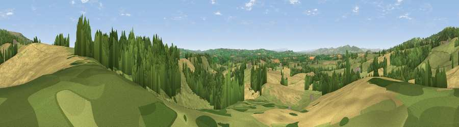

Viewpoint near Boraston
#15019 in England · top 39% of its area beats it · near BorastonThe view, rendered

A 360° render of this exact spot computed from the terrain model, tree cover and land cover — summer colours, afternoon light, calibrated against photographs of famous viewpoints. Real trees, hedges and buildings will differ in detail.
The panorama
Grey silhouette: terrain skyline in each direction (720 bearings, Earth curvature and refraction included). Dashed green: skyline with trees (+15 m) and buildings (+8 m) as obstacles. Blue strip: how far the ground is visible on each bearing.
Where the view opens
Wedge length = distance to the farthest visible ground on that bearing (vegetation-aware). Rings at 10, 25 and 50 km.
What fills the view
44% grassland · 33% cropland · 22% woodland ·
Angular shares of the visible panorama (visual magnitude), not map area. Landscape diversity 0.47 (0–1 Shannon).
Key numbers
More beautiful places nearby
The staircase of upgrades: each row has a higher view potential than everything closer. Driving times are estimates from straight-line distance, calibrated against real road routing — check an actual route before setting out.
| Place | Direction | Drive | Score |
|---|---|---|---|
| Viewpoint near Hope Bagot | NNE · 0 km | ~2 min | 63.1 |
| Viewpoint near Hope Bagot | N · 2 km | ~5 min | 73.7 |
| Viewpoint near Cleehill | N · 4 km | ~10 min | 82.3 |
| Titterstone Clee | N · 6 km | ~13 min | 83.8 |
| The Lawley | NNW · 28 km | ~44 min | 85.8 |
| North Hill | SE · 31 km | ~48 min | 86.8 |
| Worcestershire Beacon | SSE · 32 km | ~49 min | 87.1 |
| Viewpoint near West Quantoxhead | SSW · 138 km | ~161 min | 87.9 |
52.34303, -2.58967 · source: screening · position refined by local search. Computed location — check access rights before visiting.